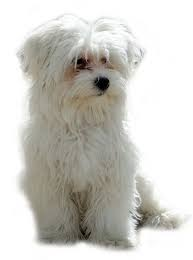

Beagle

Origen
El bichón de Malta es un pariente cercano de el bichón frisé. Se cree que los marineros del siglo XIV los llevaron a Europa desde Tenerife.
Caracteristicas
- Los machos y las hembras adultos miden entre 23 y 28 cm y pesan de 3 a 6 kg.
- Perro mini tipo toy.
- Perro tranquilo.
- Se requiere un adiestramiento básico.
- Le gustan los paseos suaves.
- Convive bien con otras mascotas.
Personalidad
A estos perritos felices y activos les encanta la vida familiar. Les gusta mucho acompañar a la familia en todas las salidas, pero pueden quedarse solos de vez en cuando. Se socializan bien y están a gusto en compañía de otros perros y mascotas en el hogar.